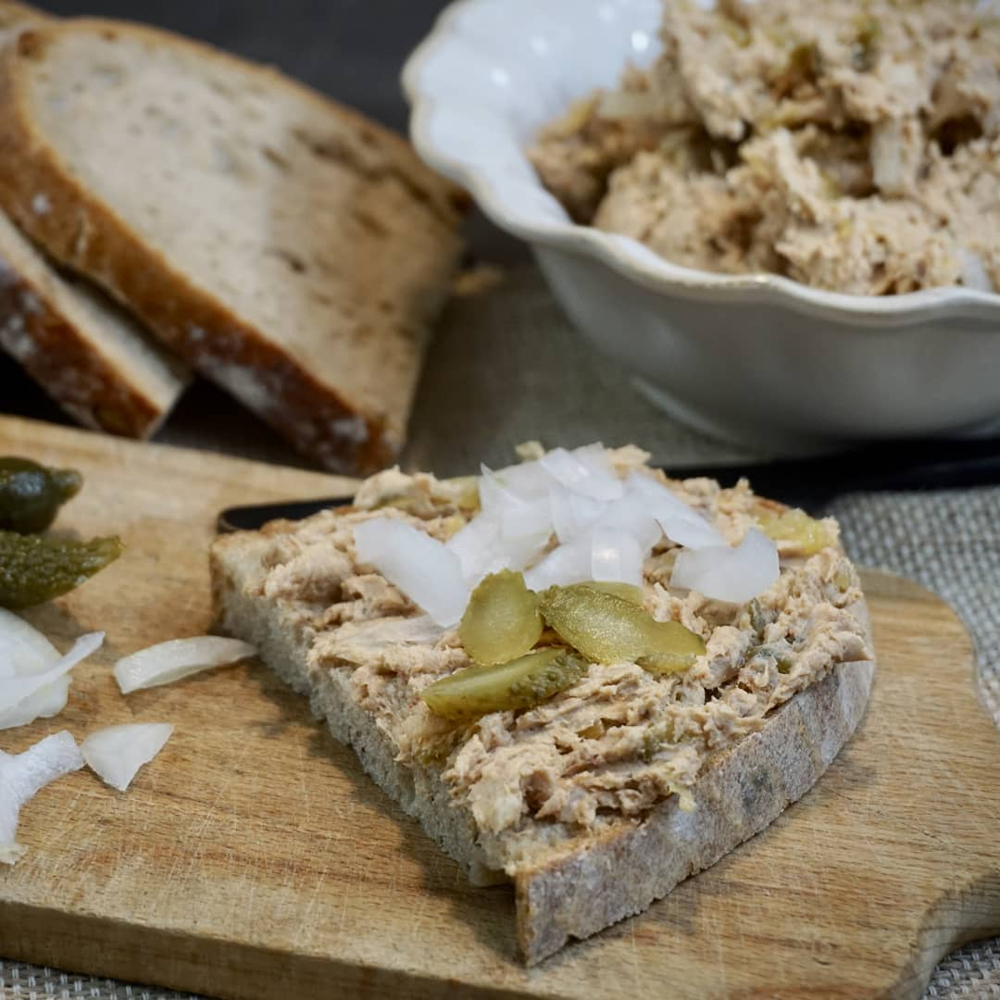

Mäsová pomazánka — Normy Jedál
Když jsem připravovala vepřové maso na pivu, udělala jsem ho záměrně trošku víc. Měla jsem totiž v plánu vytvořit tuhle prďáckou masovou pomazánku. A protože mám zřejmě závislost 🤪 na mém kváskovém chlebíku, upekla jsem rovnou i ten😋
https://www.snedeno.cz/recept/masova-pomazanka/
.
.
.
.
#maso #pomazanka #masovapomazanka #svacina #vecere #nachleba #domaci #chleb #chleba #ceskakuchyne #recept #vari #varenie #varime #varimedoma #blogerka